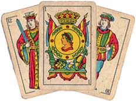

Briscola Morocain Card Game
Brescola is a classic Italian card game played against the computer.
This implementation is built using the Qt framework.
Installation
Windows
- Download the installer from the releases page.
- Run the installer and follow the on-screen instructions.
- Launch the Brescola game after installation.
How to Play
- Start the game.
- Select your preferred settings, such as difficulty level
,mute/unmute music/sound and BackGround color.
- Read the tutorial.
- Enjoy the Brescola game!
Features
- Single-player mode against the computer.
- Choose difficulty levels (easy, medium, hard).
- Customizable backGround color.
- Mute/unmute music and sounds.
Controls
- Use the mouse to interact with the game interface.
License
This project is licensed under the MIT License - see the LICENSE file for details.
For support or inquiries, contact us at rihane.aymane@etu.uae.ac.ma
or kenafi.hiba@etu.uae.ac.ma .
Acknowledgments
- The Qt Project for providing a powerful framework.